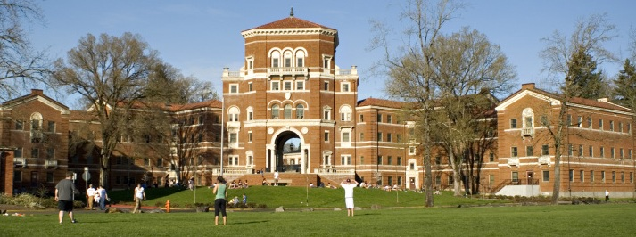
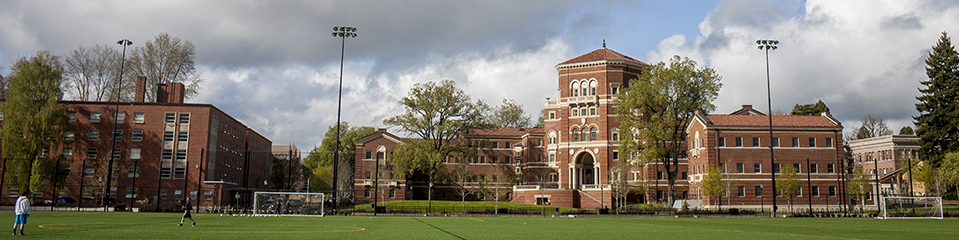

英文名称 Kent State University 学校网站 www.kent .edu 学校简介 肯特 州立大学（Kent State University）位于 美国东北部 ，是中国教育部首批认可推荐的美国百年名校之一， 《美国新…
英文名称 Kent State University
学校网站 www.kent.edu
学校简介
肯特州立大学（Kent State University）位于美国东北部，是中国教育部首批认可推荐的美国百年名校之一，《美国新闻和世界报道》美国大学排名第175名（2016版本）。该校建于1910年，由八个校区构成，在校学生近35000人，中国留学生900多人。肯特是全美最大的地方性教育体系之一，在俄亥俄州规模前三。权威的《美国新闻和世界报道》将肯特评为全美综合研究型大学200强之一。肯特提供270多个本科专业，55类硕士专业以及22类博士专业课程。以其综合优势《Princeton Review》 多年来把肯特誉为“最佳中西部大学”之一，证明其教学和研究方面的雄厚实力。这所大学最大的特色是，它本身就是肯特镇，换言之，在镇内到处都是大学生。

地理位置
俄亥俄州位于美国东北部, 别称七叶树州， 因地处俄亥俄河与伊利湖之间而得名。 面积10.67万平方千米。 人口1143.5万（2003 年)，城市人口占 73%。首府哥伦布。地势自东向西缓斜，起伏很小。曾遭冰川浸入，冰碛层广布。温带大陆性湿润气候。1月平均气温－4～－2℃，7月平均气温 23℃，年平均降水量 950 毫米，其中降雪占1/7 。森林覆盖率为25%，主要分布在东部和南部。肯特市（Kent）作为一个大学城，景色优美，享有“树之城”的美誉。肯特市地理位置优越，交通便利，毗邻东海岸主要城市，往东距纽约大概5小时车程，往西距芝加哥约4 小时车程。肯特作为一个大学城，流动人口很少，学校附近的设施均以校园为中心提供支持性服务，所以肯特是一个非常安全的小城市，生活简单恬静，是典型的美国生活方式，学生在肯特这样的环境学习不会受到太多的干扰。

院系设置
肯特州立大学现设有8个院系：文学和科学学院、建筑和环境学院、商学院、传媒和信息学院、教育、卫生和社会服务学院、艺术学院、护理学院、技术学院等等。肯特州立大学的商学院致力于培养学生的领导才能、团队精神、创造性、全球性战略眼光和信息技术的应用能力。本科专业集中在以下领域：会计学、计算机信息系统、经济学、金融、管理学、市场学、以及运营管理。硕士专业包括商业管理、会计学、经济学、金融，商学院还设有商学研究的博士学位。 MBA项目具有自己的特色，强调实习机会，同时注重实践性教学，充分结合了案例分析，小组活动以及互动性很强的实习项目。同时还为学生提供职业发展咨询和就业服务。

强势专业
听觉学、护理学、美术、语言矫正学
选择理由
1、众多学科拔尖（金融、传媒、商科、时装等）
2、学科门类齐全（270多个专业）
3、学位设置完整（本科、硕士、博士）
4、本科教育突出（综合性大学）
5、校园环境安全（6年被FBI评为本州第一）
6、学习费用适中（和全美同类相比处中等偏下）
7、生活成本合理（房租是大城市的三分之一）
9、学生服务优良（校车、无线网络、学习指导）
10、学习氛围良好（大学城）
11、地理位置优越（距纽约、芝加哥等很近）
12、四季气候宜人（毗邻五大湖区）

入学要求
本科：托福 71 雅思 6.0 GPA 3.0
研究生：托福 75 雅思 6.0 GPA 3.0

学费情况
学费：$19000 -$26800/年

本文由 辽宁留学服务有限公司 编辑发布，内容仅供留学规划参考，未经授权请勿转载。
政策法规、招生简章与项目费用等信息具有时效性，请以各国官方机构及院校最新发布为准；如需核实详情，请联系顾问。